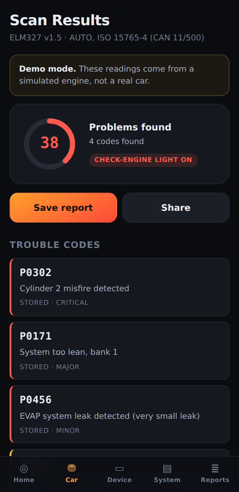
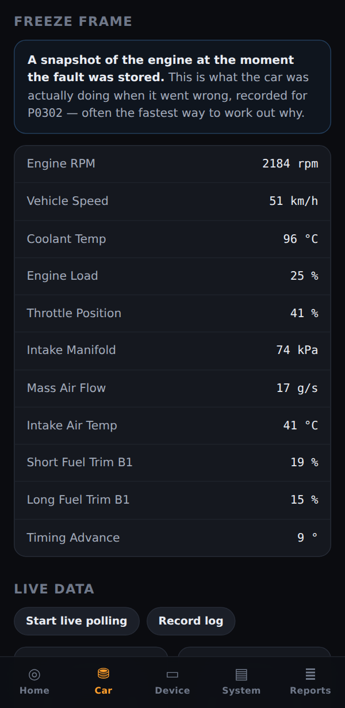
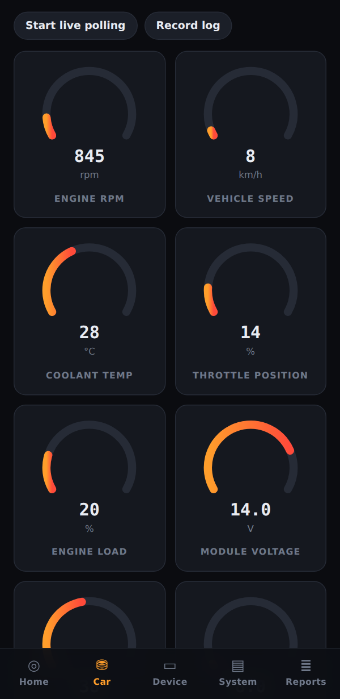
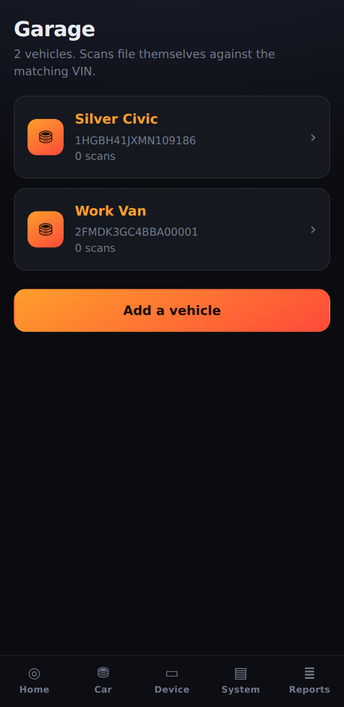
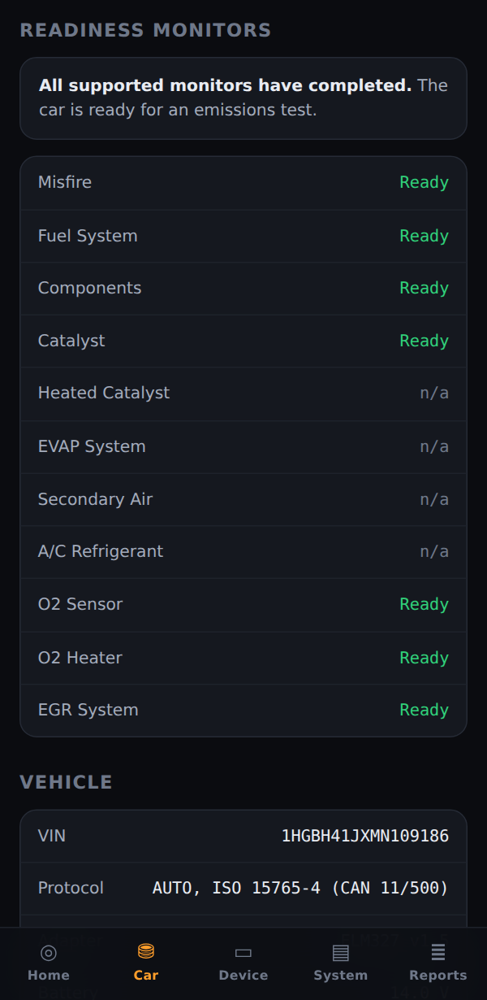
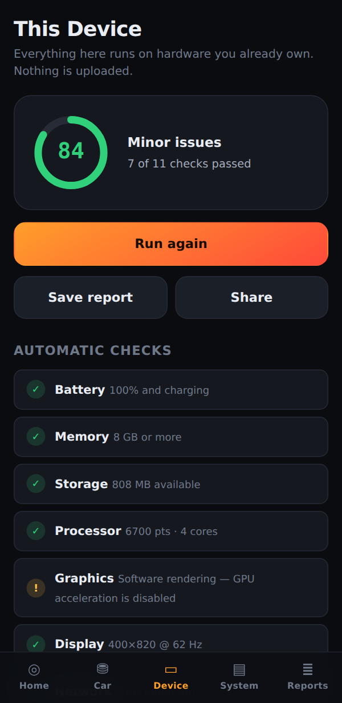
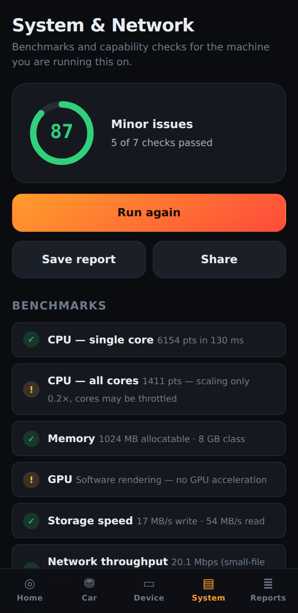
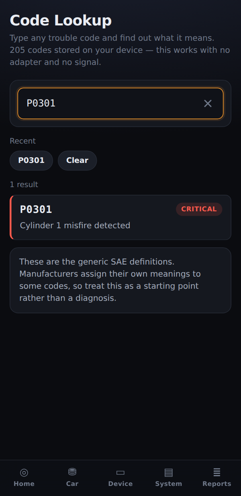

One app that reads your car's engine fault codes, tests your phone's hardware, and benchmarks your computer. No account, no subscription creeping up on you, and nothing about you ever leaves your device.

Not a video, not a mockup — this actually measures the machine you're reading on. It takes a few seconds and nothing leaves your device.
Everything below is built and working — it just needs unlocking. One payment of $19, no subscription, and the code works on every device you own.
Read stored, pending and permanent fault codes straight from your car, each one translated into plain English.

The exact engine conditions recorded at the moment a fault was stored. Usually the fastest route to the cause.

Watch revs, coolant, throttle and voltage as you drive, then export the whole session as a spreadsheet.

Keep several cars. Scans recognise the VIN and file themselves, so each vehicle builds a real history.
Demo mode runs the entire car scan against a simulated engine, free and forever. Buy only once you've seen it work.
Your car, the phone in your hand, and the computer on your desk — all checked from the same place, with results you can actually read.
Reads engine trouble codes, live sensor data and emissions readiness through a standard OBD-II adapter. The one part that needs hardware.
Battery health, memory, storage, processor speed, screen, cameras, microphone, GPS and motion sensors. Needs nothing but the device itself.
Processor and multi-core benchmarks, memory ceiling, graphics, disk speed and network throughput — plus a script for the parts a browser can't reach.
PS5, Xbox and generic pads over Bluetooth or USB. Measures stick drift, checks every button and both triggers, and tests rumble.
Dead pixels, backlight bleed, uniformity, colour banding and ghosting — on a monitor, a laptop, a phone or the TV your console is plugged into.
Plug a cheap adapter into the port under your dash and OmniDx reads the same data a garage reads — then explains it in plain English instead of a code number.
When a fault is stored, the engine computer photographs itself — revs, speed, coolant temperature, fuel trims, the lot. OmniDx pulls that snapshot back out. It's usually the fastest route to the real cause.
Live gauges update continuously while you drive. Hit record and every reading is captured, then exported as a spreadsheet you can open anywhere.
Cars run self-tests in the background and refuse an emissions certificate until they've finished. OmniDx shows which have completed and which haven't.

A full hardware check on the device you're holding. No adapter, no cable, nothing to buy.

Real benchmarks rather than guesswork, including how well the machine uses all its cores — which is where throttling and overheating show up.

Somebody quoted you a repair for a code you've never heard of. Type it in and find out what it actually means, how serious it is, and whether it's generic or specific to your manufacturer. Works with no adapter and no signal.

Keep more than one vehicle. Scans recognise the VIN and file themselves against the right car, so you build a history instead of a pile of unrelated results — and you can see whether things are getting better or worse.
There's nothing to download from a store — OmniDx installs straight from the web and then opens full screen with its own icon, working offline. Takes about ten seconds.
Device and system checks run on hardware in your pocket and on your desk. For the vehicle side you need one small adapter, and the good ones are cheap.
The most reliable cheap adapter. Pairs first try and sleeps when the car is off, so it won't flatten your battery. Get the BLE 4.0 version.
Search for "ELM327 BLE 4.0 OBD2". Quality varies between sellers, so buy somewhere with easy returns. It must say BLE or Bluetooth 4.0.
Rock solid and the cheapest option, but you're tethered to the car. To use one on a phone you also need a USB-C OTG adapter, about $8.
Genuine chipset, much faster polling and far better on stubborn vehicles. Overkill for occasional use — worth it if the cheap ones frustrate you.
They force your phone onto their own network. Browsers can't reach them and you lose mobile data while connected.
They use a profile no browser on any platform can open. This is an operating system restriction, not something an app can work around.
Frequently counterfeit chips that hang mid-scan or read only one protocol. The $10 you save isn't worth a scan that stalls.
Chrome on Android, and Chrome or Edge on Windows, Mac and Linux — over Bluetooth or USB.
Everything works except live car scanning. Apple doesn't allow Bluetooth hardware access in any iOS browser, so no web app can do it. Demo mode still runs.
No subscription, no account, no adverts, and nothing about you collected or sold. Start free and upgrade only if the car side is useful to you.
Ratings are stored on your own device — there's no account and no tracking behind this.
No. Every device and computer test, the trouble-code lookup and the full demo scan are free and need no hardware at all. You only need an adapter — about $30 — if you want to read your own car.
Payment goes through Cash App, which also takes a debit or credit card if you don't use Cash App yourself. Put your email address in the payment note — Cash App doesn't pass an order along, so that note is the only way to know where to send your unlock code. The code arrives by hand, usually within a day, and you enter it once in the app under Unlock Pro.
No. Enter the same code on your phone, your tablet and your laptop. It's stored in each browser, so you'll need it again if you clear your browsing data — keep the email.
No, and there isn't one to make. There's no server behind OmniDx, so there's nothing to log into — which also means no password to leak and no profile to sell. Your Pro code is all the "account" there is: enter it on any device to unlock, and keep the email it came in so you can enter it again later.
You don't — it installs straight from this site. Open OmniDx and use Install in the header (Android, Windows, Mac) or Share → Add to Home Screen on iPhone. You get a real icon that opens full screen and works offline. There's no app store listing, which is also why there's no store cut and no waiting on review.
Not the console itself — no web app can reach one, and anything claiming otherwise isn't telling you the truth. What it does test is the two parts that actually fail: the controller (stick drift, buttons, triggers, rumble, over Bluetooth or USB) and the screen it's plugged into (dead pixels, backlight bleed, ghosting).
Almost certainly. Every car sold in the United States from 1996, and in the EU from 2001 for petrol or 2004 for diesel, has the OBD-II port OmniDx uses. It's usually under the dash near your left knee.
Apple doesn't permit Bluetooth or serial hardware access in any iOS browser — Safari, Chrome or otherwise. That's an Apple restriction no web app can work around. Everything else in OmniDx works fully on iOS, and demo mode shows you the car scan. For live data on an iPhone you'd need a native app and a Wi-Fi adapter.
Nowhere. There is no server, no account and no analytics. Scans are saved in your browser's own storage on your device and are only shared if you tap Share. You can delete everything from inside the app at any time.
Yes. Once it's loaded the first time it runs entirely offline, which matters in a car park or an underground garage. Install it to your home screen and it opens full screen like any other app.
It's safe, but it doesn't repair anything — and OmniDx says so before it does it. Clearing wipes the emissions self-tests too, so the car will fail an emissions test until it has re-run them over several days of driving. Fix the cause first.
They're the generic SAE definitions, which are correct for the great majority of codes. Manufacturers assign their own meanings to some, so treat a result as the start of a diagnosis rather than the end of one.
Open it right now — no download, no sign-up, and the demo scan works before you've bought a thing.
A full video editor with an AI that takes your clips and a sentence — "30 second TikTok trailer, fast cuts on the beat, captions on" — and builds the edit. Free, no watermark, works offline, on every device you own.